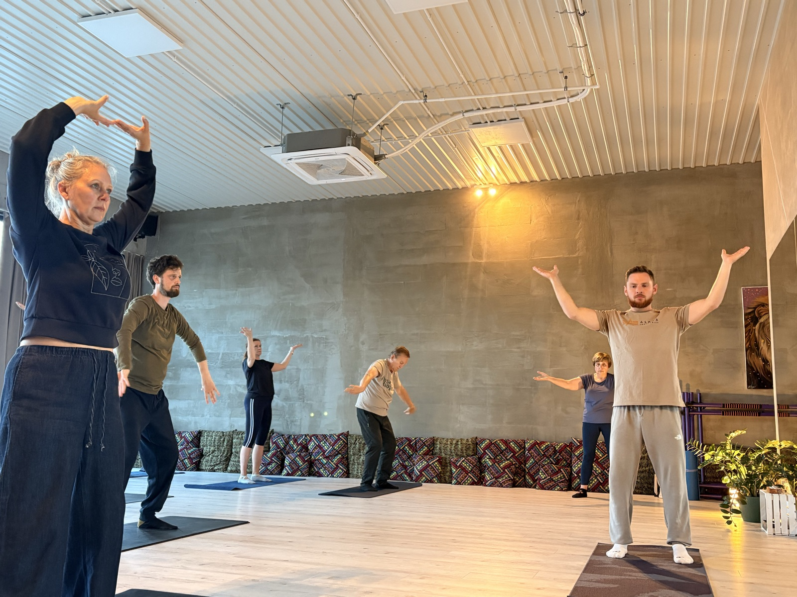
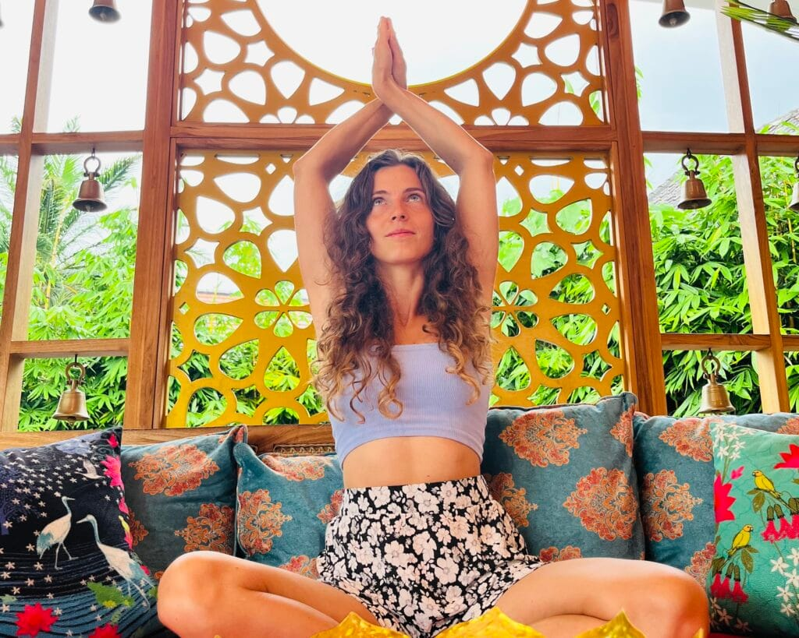
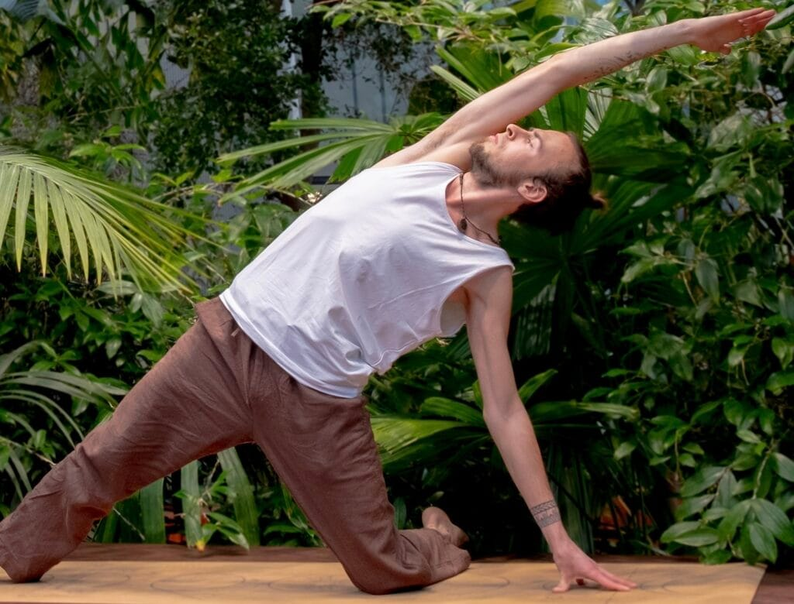
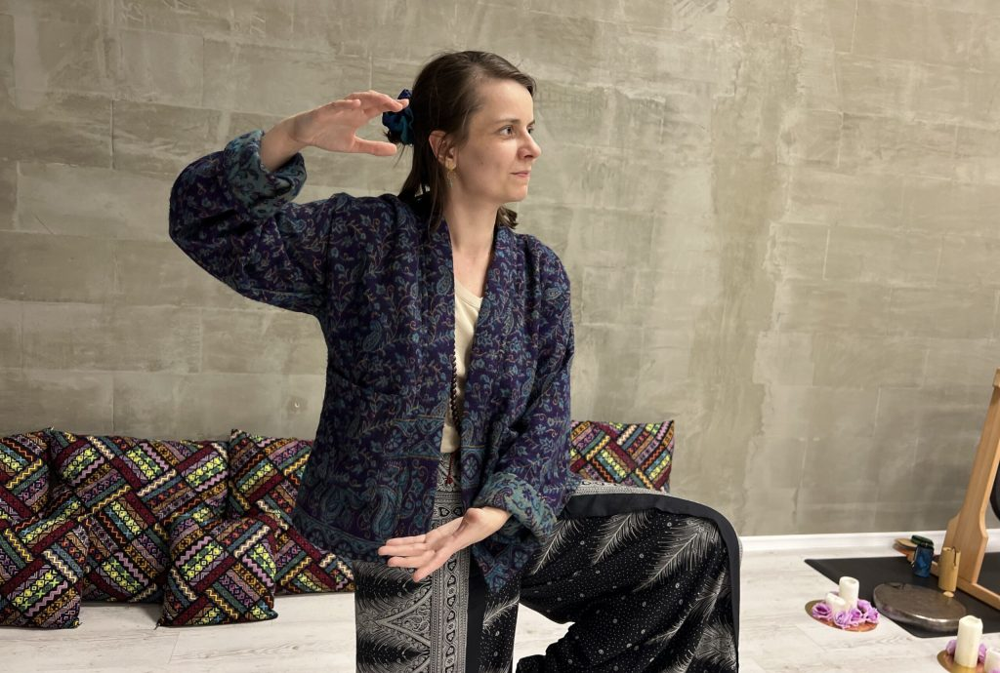
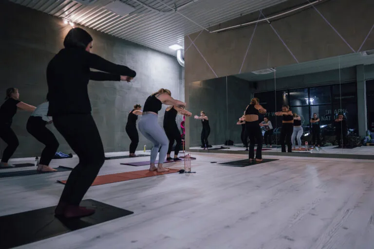

Zajęcia › Wyciszenie i regeneracja
Qi Gong – Zdrowy Kręgosłup
Dla osób, które chcą zadbać o kręgosłup i stawy spokojnym ruchem połączonym z oddechem.
- łagodna
- 60 min
- wt 19:30, wt 20:30

O zajęciach
Na czym polegają zajęcia?
Qi Gong to starszy brat Tai Chi. Proste, spokojne ruchy połączone z oddechem wspierają zdrowy kręgosłup i elastyczne stawy. Ciało zaczyna współpracować z oddechem, napięcie ustępuje miejsca lekkości, a głowa odnajduje spokój – bez długich medytacji, w czystej energii ruchu.
- Zdrowy kręgosłup
- Elastyczne stawy
- Lepszy sen
- Spokój
- Energia
„Praktyka Qi Gongu to dla mnie czas podłączenia się do swojego wnętrza, do czucia tego, co w środku, i sprzątania tego, co potrzebuje porządku.”
Grzegorz Gromnicki
Te zajęcia są dla Ciebie, jeśli:
- po całym dniu czujesz napięcie w plecach
- chcesz wzmocnić stawy i poprawić elastyczność bez intensywnego wysiłku
- szukasz sposobu na spokojniejszą głowę i lepszy sen
- chcesz zadbać o zdrowie łagodnym ruchem
Korzyści
Co Ci dadzą regularne zajęcia
- Rozluźnisz nagromadzone napięcia
- Zadbasz o kręgosłup i ruchomość stawów
- Uspokoisz głowę
- Odzyskasz więcej równowagi i energii na co dzień
Dlaczego warto
Dlaczego warto wybrać Qi Gong – Zdrowy Kręgosłup?
Od napięcia do lekkości
Ruch rozluźnia, wzmacnia i regeneruje – z każdą praktyką czujesz więcej swobody.
Oddech i uważność
Ciało współpracuje z oddechem, a codzienny chaos zamienia się w większą klarowność.
Czas tylko dla Ciebie
Przestrzeń, w której odzyskujesz energię, równowagę i radość z bycia tu i teraz.
Terminy
Najbliższe zajęcia
- Dziś 19:30–20:30 Grzegorz Gromnicki brak miejsc →
- Dziś 20:30–21:30 Grzegorz Gromnicki zapisz się · wolne: 6 →
- Wtorek, 13.10 19:30–20:30 Grzegorz Gromnicki zapisz się · wolne: 1 →
- Wtorek, 13.10 20:30–21:30 Grzegorz Gromnicki zapisz się · wolne: 5 →
- Wtorek, 20.10 19:30–20:30 Grzegorz Gromnicki zapisz się · wolne: 3 →
- Wtorek, 20.10 20:30–21:30 Grzegorz Gromnicki zapisz się · wolne: 6 →
- Wtorek, 27.10 19:30–20:30 Grzegorz Gromnicki zapisz się · wolne: 3 →
- Wtorek, 27.10 20:30–21:30 Grzegorz Gromnicki zapisz się · wolne: 6 →
Jak zacząć?
- Kup wejście – pierwsze wejście 40 zł albo 7 dni bez limitu za 111 zł.
- Zapisz się na termin – kliknij wybrany dzień obok, otworzy się grafik na ten dzień.
- Przyjdź 10 minut wcześniej – w wygodnym stroju, ćwiczymy boso.
Masz pytania? +48 797 976 960
Prowadzący
Kto prowadzi zajęcia
Wyciszenie i regeneracja
Zobacz też

Yoga KobiecaDla kobiet, które potrzebują chwili dla siebie – ruchu, wyciszenia i kontaktu z własnym ciałem.
Joga DługowiecznościDla każdego, kto chce zachować sprawne i mobilne ciało na lata – poziom zaawansowania nie ma znaczenia.
Tai Chi od podstawDla osób, które chcą zacząć przygodę z Tai Chi albo uporządkować i udoskonalić technikę.
Tai Chi – grupa zaawansowanaDla osób, które mają już doświadczenie z Tai Chi lub regularnie praktykują Qi Gong czy podobne formy ruchu.Zapisz się na zajęcia
Wybierz zajęcia, które odpowiadają Twoim potrzebom
W planie tygodnia kliknij „zapisz się” przy wybranych zajęciach – grafik e-fitness otworzy się od razu na tym dniu. Pierwszy raz? Zacznij od pierwszego wejścia za 40 zł albo 7 dni bez limitu za 111 zł.